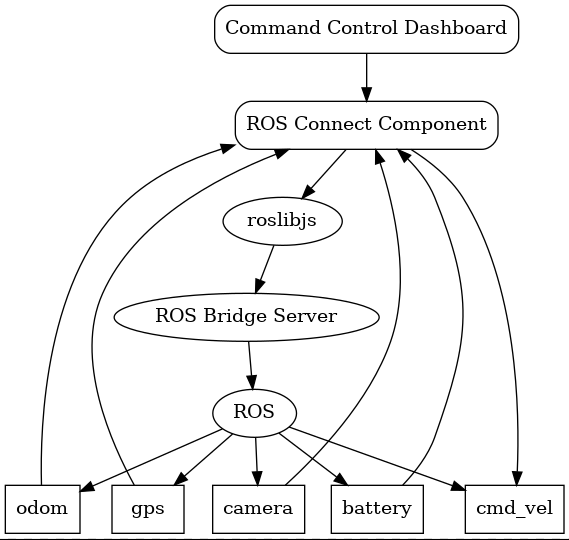
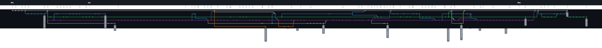

Command and Control Dashboard
About
Team
Naimul Hasan (naimulhasan@brandeis.edu | LinkedIn)
Jimmy Kong (jameskong@brandeis.edu | LinkedIn)
Brandon J. Lacy (blacy@brandeis.edu | LinkedIn)
Submission Date
May 5, 2023
GitHub Repository
Demo Video
Table of Contents
Introduction
“You can’t be an expert in everything. Nobody’s brain is big enough.” A quote that’s been stated by Pito at least twice this semester and once last semester in his software entrepreneurship course, but one that hadn’t truly sunk in until the time in which I, Brandon, sat down to write this report with my teammates, Naimul and Jimmy.
I’ve greatly enjoyed the time spent on group projects within my professional experiences, but always erred on the side of caution with group work in college as there’s a much higher chance an individual won’t pull their weight. It’s that fear of lackluster performance from the other team members that has always driven me to want to work independently. I’d always ask myself, “What is there to lose when you work alone?
You’ll grow your technical expertise horizontally and vertically in route to bolster your resume to land that job you’ve always wanted, nevermind the removal of all of those headaches that come from the incorporation of others. There is nothing to lose, right?”
Wrong.
You lose out on the possibility that the individuals you could’ve partnered with are good people, with strong technical skills that would’ve made your life a whole lot easier throughout the semester through the separation of duties. You lose out on a lot of laughs and the opportunity to make new friends.
Most importantly, however, you lose out on the chance of being partnered with individuals who are experts in areas which are completely foreign to you.There is nobody to counter your weaknesses. You can’t be an expert in everything, but you can most certainly take the gamble to partner with individuals to collectively form one big brain full of expertise to accomplish a project of the magnitude in which we’ve accomplished this semester.
I know my brain certainly wasn’t big enough to accomplish this project on my own. I’m grateful these two men reached out to me with interest in this project. Collectively, we’ve set the foundation for future iterations of the development of campus rover and we think that’s pretty special considering the long term impact beyond the scope of this course. So, I guess Pito was right after all; one brain certainly isn’t big enough to carry a project, but multiple brains that each contribute different areas of expertise. Now that’s a recipe for success.
Campus Rover Dashboard
Overview
The command and control dashboard, otherwise known as the campus rover dashboard, is a critical component to the development of the campus rover project at Brandeis University as it’s the medium in which remote control will take place between the operator and the robot. It is the culmination of three components: a web client, robot, and GPS. Each component is a separate entity within the system which leverages the inter-process communications model of ROS to effectively transmit data in messages through various nodes. There are various directions in which the campus rover project can progress, whether it be a tour guide for prospective students or a package delivery service amongst faculty. The intention of our team was to allow the command and control dashboard to serve as the foundation for future development regardless of the direction enacted upon in the future.
System Architecture

Web-Client
React.js
The front-end and back-end of our web client is built with React.js. The app.js file is used to manage routes and some React-Bootstrap for the creation of certain components, such as buttons. The code structure is as follows: app.js contains the header, body, and footer components. The header component hosts the web client’s top-most part of the dashboard which includes the name of the application with links to the different pages. The footer component hosts the web-client’s bottom-most part of the dashboard which includes the name of each team member. The body component is the meat of the application which contains the routes that direct the users to the various pages. These routes are as follows: about, help, home, and settings. Each of these pages utilize components that are created and housed within the rosbridge folder. You can think of them as parts of the page such as the joystick or the video feed. The ros_congig file serves as the location for default values for the settings configurations. We use local storage to save these settings values and prioritize them over the default values if they exist.
ROSbridge and ROSLIBJS
ROSBridge is a package for the Robot Operating System (ROS) that provides a JSON-based interface for interacting with ROS through WebSocket protocol (usually through TCP). It allows external applications to communicate with ROS over the web without using the native ROS communication protocol, making it easier to create web-based interfaces for ROS-based robots. ROSLIBJS is a JavaScript library that enables web applications to communicate with ROSBridge, providing a simple API for interacting with ROS. It allows developers to write web applications that can send and receive messages, subscribe to topics, and call ROS services over websockets. ROSBridge acts as a bridge between the web application and the ROS system. It listens for incoming WebSocket connections and translates JSON messages to ROS messages, and the other way around. ROSLIBJS, on the other hand, provides an API for web applications to interact with ROSBridge, making it easy to send and receive ROS messages, subscribe to topics, and call services. In a typical application utilizing ROSBridge and ROSLIBJS, it would have the following flow:
- Web client uses ROSLIBJS to establish a WebSocket connection to the ROSBridge server, through specifying a specific IP address and port number.
- The web client sends JSON messages to ROSBridge, which converts them to ROS messages and forwards them to the appropriate ROS nodes.
- If the node has a reply, the ROS nodes send messages back to ROSBridge, which converts them to JSON and sends them over the WebSocket connection to the web client.
- ROSLIBJS API processes the incoming JSON messages so it can be displayed/utilized to the web client
GPS
GPS, or Global Positioning System, is a widely-used technology that enables precise location tracking and navigation anywhere in the world through trilateration, a process which determines the receiver’s position by measuring the distance between it and several satellites. Though it has revolutionized the way we navigate and track objects, its accuracy can vary depending on a variety of factors that are beyond the scope of this paper. However, there are various companies which have embraced the challenge of a more accurate navigation system that incorporates other data points into the algorithm responsible for the determination of the receiver position. Apple is notorious for the pin-point accuracy available within their devices which incorporate other sources such as nearby Wi-Fi networks and cell towers to improve its accuracy and speed up location fixes. The utilization of a more sophisticated location technology is critical for this project to be able to navigate routes within our university campus. Therefore, we’ve chosen to leverage an iPhone 11 Pro placed on our robot with the iOS application GPS2IP open to leverage the technology available in Apple’s devices to track our robot’s movement.
GPS2IP
GPS2IP is an iOS application that transforms an iPhone or iPad into a wireless GPS transmitter over the network. It possesses various features such as high configurability, background operation on the iPhone, and standard NMEA message protocols. There is a free lite version available for testing and system verification as well as a paid version with all available features.
ROS
Nodes
/gps
The node’s purpose is to listen to GPS2IP through a socket and publish the data as a gps topic. The GPS2IP iOS application provides the functionality of a portable, highly sophisticated, GPS receiver that provides a very accurate location when the iPhone is placed on the robot. The GPS data is sent as a GLL NMEA message from a given IP address and corresponding port number. The /gps node leverages the socked package in Python to listen to the messages published at that previously emphasized IP address and port number. Through this connection, a stream of GLL messages can be received, parsed, and transformed into the correct format to be interpreted by the web client. The main transformation is for the latitude and longitude from decimal and minutes to decimal degrees format. The node will publish continuously until the connection through the socket is disturbed. The topic has a data type of type String, which is a serialized version of JSON through the utilization of the json package to dump the Python dictionary.
Code
#!/usr/bin/env python
'''
A module with a GPS node.
GPS2IP: http://www.capsicumdreams.com/gps2ip/
'''
import json
import re
import rospy
import socket
from std_msgs.msg import String
class GPS:
'''A node which listens to GPS2IP Lite through a socket and publishes a GPS topic.'''
def __init__(self):
'''Initialize the publisher and instance variables.'''
# Instance Variables
self.HOST = rospy.get_param('~HOST', '172.20.38.175')
self.PORT = rospy.get_param('~PORT', 11123)
# Publisher
self.publisher = rospy.Publisher('/gps', String, queue_size=1)
def ddm_to_dd(self, degrees_minutes):
degrees, minutes = divmod(degrees_minutes, 100)
decimal_degrees = degrees + minutes / 60
return decimal_degrees
def get_coords(self):
'''A method to receive the GPS coordinates from GPS2IP Lite.'''
# Instantiate a client object
with socket.socket(socket.AF_INET, socket.SOCK_STREAM) as s:
s.connect((self.HOST, self.PORT))
# The data is received in the RMC data format
gps_data = s.recv(1024)
# Transform data into dictionary
gps_keys = ['message_id', 'latitude', 'ns_indicator', 'longitude', 'ew_indicator']
gps_values = re.split(',|\*', gps_data.decode())[:5]
gps_dict = dict(zip(gps_keys, gps_values))
# Cleanse the coordinate data
for key in ['latitude', 'longitude']:
# Identify the presence of a negative number indicator
neg_num = False
# The GPS2IP application transmits a negative coordinate with a zero prepended
if gps_dict[key][0] == '0':
neg_num = True
# Transform the longitude and latitude into decimal degrees
gps_dict[key] = self.ddm_to_dd(float(gps_dict[key]))
# Apply the negative if the clause was triggered
if neg_num:
gps_dict[key] = -1 * gps_dict[key]
# Publish the decoded GPS data
self.publisher.publish(json.dumps(gps_dict))
if __name__ == '__main__':
# Initialize a ROS node named GPS
rospy.init_node("gps")
# Initialize a GPS instance with the HOST and PORT
gps_node = GPS()
# Continuously publish coordinated until shut down
while not rospy.is_shutdown():
gps_node.get_coords()
img_res
The node’s purpose is to alter the quality of the image through a change in resolution. It’s done through the utilization of the OpenCV package, CV2, and cv_bridge in Python. The cv_bridge package, which contains the CvBridge() object, allows for seamless conversion from a ROS CompressedImage to a CV2 image and vice versa. There are two different camera topics that can be subscribed to depending upon the hardware configuration, /camera/rgb/image/compressed or /raspicam_node/image/compressed. Additionally, the /image_configs topic is subscribed to to receive the specifications for the resolution from the web client. A new camera topic is published with the altered image under the topic name /camera/rgb/image_res/compressed or /raspicam_node/image_res/compressed depending upon the hardware configuration. The web client subscribes to this topic for the camera feed.
Code
#!/usr/bin/env python
'''
A module for a node that alters the quality of the image.
'''
import cv2
import numpy as np
import re
import rospy
from cv_bridge import CvBridge
from sensor_msgs.msg import CompressedImage
from std_msgs.msg import String
class Compressor:
''''''
def __init__(self):
'''Initialize necessary publishers and subscribers.'''
# Instance Variables
# Initialize an object that converts OpenCV Images and ROS Image Messages
self.cv_bridge = CvBridge()
# Image Resolution
self.img_res = {
'height': 1080,
'width': 1920
}
# Publisher - https://answers.ros.org/question/66325/publishing-compressed-images/
# self.publisher = rospy.Publisher('/camera/rgb/image_res/compressed', CompressedImage, queue_size=1)
self.publisher = rospy.Publisher('/raspicam_node/image_res/compressed', CompressedImage, queue_size=1)
# Subscribers
# self.subscriber_cam = rospy.Subscriber('/camera/rgb/image_raw/compressed', CompressedImage, self.callback_cam, queue_size=1)
self.subscriber_cam = rospy.Subscriber('/raspicam_node/image/compressed', CompressedImage, self.callback_cam, queue_size=1)
self.subscriber_set = rospy.Subscriber('/image_configs', String, self.callback_set, queue_size=1)
def callback_cam(self, msg):
'''A callback that resizes the image in line with the specified resolution.'''
# Convert CompressedImage to OpenCV
img = self.cv_bridge.compressed_imgmsg_to_cv2(msg)
# Apply New Resolution
img = cv2.resize(img, (self.img_res['height'], self.img_res['width']))
# Convert OpenCV to CompressedImage
msg_new = self.cv_bridge.cv2_to_compressed_imgmsg(img)
# Publish
self.publisher.publish(msg_new)
def callback_set(self, msg):
'''A callback to retrieve the specified resolution from the web client.'''
img_set = re.split(',', msg.data)
self.img_res['height'] = int(img_set[0])
self.img_res['width'] = int(img_set[1])
if __name__ == "__main__":
rospy.init_node("img_comp")
comp = Compressor()
rospy.spin()
/rostopiclist
The node’s purpose is to retrieve the output generated by the terminal command “rostopic list” to receive a list of currently published topics. It performs this functionality through the use of the subprocess package in Python, which will create a new terminal to execute the command. The output is then cleaned to be published over the topic “/rostopic_list”. The topic has a data type of type String. It is subscribed too by the web client and parse the data based upon the comma delimiter. The content is used to create a scrollable menu that displays all of the available rostopics.
Code
#!/usr/bin/env python
import rospy
from std_msgs.msg import String
import subprocess
def get_ros_topics():
"""
Returns a list of active ROS topics using the `rostopic list` command.
"""
command = "rostopic list"
process = subprocess.Popen(command.split(), stdout=subprocess.PIPE)
output, error = process.communicate()
topics = output.decode().split("\n")[:-1] # remove empty last element
return topics
def rostopic_list_publisher():
"""
ROS node that publishes the list of active ROS topics as a string message.
"""
rospy.init_node('rostopic_list_publisher', anonymous=True)
pub = rospy.Publisher('/rostopic_list', String, queue_size=10)
rate = rospy.Rate(1) # 1 Hz
print("[INFO] Robot.py node has been started!")
while not rospy.is_shutdown():
1 topics = get_ros_topics()
message = ",".join(topics)
pub.publish(message)
rate.sleep()
if __name__ == '__main__':
try:
rostopic_list_publisher()
except rospy.ROSInterruptException:
pass
Walkthrough
GitHub
Architecture
The command-control repository can be effectively broken down into six branches, with one deprecated branch, to create a total of five active branches:
main: The branch contains the stable version of the project. It is locked, which means no one can directly push to this branch without another person reviewing and testing the changes.
ros-api: The branch was initially committed to develop an API through FastAPI, but was later deprecated because the functionality could be implemented with ROSBridge and ROSLIBJS.
ros-robot: The branch focuses on the development and integration of the Robot Operating System (ROS) with a physical or simulated robot. It includes the launch files responsible for the run of the gps, dynamic image compression, and ROSBridge.
test-old-videofeed: The branch was created to test and debug the previous implementation of the dashboard, which was built five years ago. We imported the video from the old dashboard to our dashboard but later deprecated this implementation as it used additional redundant dependencies which can be implemented with ROSBridge and ROSLIBJS.
test-old-web-client: The branch is to test and understand the previous version of the web client dashboard. It helped us realize areas for improvement, such as a way to set the robot’s IP address within the web application. It also set the tone for our simplified dashboard format.
web-client: The branch is for ongoing development of the new web client. It includes the latest features, improvements, and bug fixes for the web client, which may eventually be merged into the main branch after thorough testing and review.
Contribution Policy
In this section it will guide you through the process of contributing to a GitHub repository following the guidelines outlined in the contributing.md file. This file specifies that the main branch is locked and cannot be directly pushed to, ensuring that changes are reviewed before being merged.
- Update the Main Branch
- Ensure you are on the main branch and pull down the new changes.
- Resolve any conflicts which may arise at this time.
- Create a New Branch
- Create a new branch for the feature or issue and switch to it.
- Verify the current branch is the correct branch before you begin work.
- Build Feature
- Develop the feature or fix the issue on the new branch.
- Check for Conflicts within the Main Branch
- Ensure there are no conflicts with the main branch prior to the creation of the pull request. Update the main branch and merge the changes into your feature branch.
- Create a Pull Request (PR)
- Push the changes to the remote repository and create a pull request on GitHub. Provide a clear and concise description of the purpose of the feature as well as how to test it. Ensure you mention any related issue numbers.
- Request a Review
- Ask another team member to review your pull request and run the code locally to ensure there are no errors or conflicts.
- Merge the Branch
- Once the review is complete and the changes are approved, the feature branch can be merged into the main branch through the pull request.
Tutorial
Installation and Run
- Clone the GitHub repository which contains the web client code.
- Install the necessary dependencies by running ```npm install``` in the terminal.
- Start the web client by running ```npm start``` in the terminal.
- Open a web browser and type in http://localhost:3000.
- Navigate to the settings page on the web client to set them according to your intentions.
Web Client Settings
- The IP address of the ROSBridge server. It is the server that connects the web application to the ROS environment.
- Port: The port number for the ROSBridge server.
- Video Resolution Width: The width of the video resolution for the ROS camera feed.
- Video Resolution Height: The height of the video resolution for the ROS camera feed.
- Video Frame Width: The width of the video frame for the ROS camera feed.
- Video Frame Height: The height of the video frame for the ROS camera feed.
- Show Battery Status: A toggle to display the battery status in the web application.
- Manual Input Teleoperation: A toggle to enable or disable the manual teleoperation control input to replace the joystick.
Run with ROS Robot
- SSH into the robot.
- Open the GPS2IP iOS application. In the application settings, under “NMEA Messages to Send”, solely toggle “GLL”. Once set, toggle the “Enable GPS2IP” on the homepage of the application. Additionally, turn off the iOS auto-lock to prevent the application connection from being interrupted. Place the device on the robot.
- Launch the necessary ROS launch file to run the vital nodes which include gps, img_res, and rostopiclist. You may use the sim.launch file for a simulation in Gazebo and real.launch for real world.
- Run any other nodes that you desire.
- Ensure the web client has the correct ROSBridge Server IP Address and Port set within the settings page. You can check this with the “current configurations” button.
- If you want the camera to show up, make sure that the correct campera topic is set within the img_res node module. It can vary dependent upon the hardware. The two options are listed within the file with one commented out and the other active. Select one and comment out the other.
- Enjoy the web client!
Story of Project
Overview
I, Brandon, had initially intended to work on this project independently but was later reached out to by Naimul and Jimmy to form the team as presently constructed. The project was initially framed as a simple remote teleoperation application in which a user could control the robot with an arrow pad. However, it has evolved into a more sophisticated product with the expertise added from my fellow teammates. The project is now boasted as a dashboard that leverages a joystick for a more intuitive control mechanism with a live camera feed and GPS localization which far exceeded the initial outline as a result of the additional requirements associated with a group of three individuals in a team. Pito proposed various ideas associated with campus rover and it was on our own accord that we chose to combine the dashboard with the GPS localization to create a strong command center for a user to control a robot of choice.
Team Structure
The team was constructed based upon a single common interest, participation within a final project that challenged our software engineering skills within a new domain that would have a long-term impact beyond this semester. It was coincidental that our individual areas of expertise balanced out our weaknesses. The team was balanced and all members were extremely active participants throughout weekly stand ups, discussions, and lab work.
Separation of Duties
Naimul Hasan
Throughout the semester, my responsibilities evolved according to the team's requirements. Initially, after Jimmy provided a visual representation of the previous dashboard, I designed an intuitive and user-friendly Figma layout. I then examined the code and relevant research, which led me to employ ROSLIBJS and RosBridge for the project. I dedicated a week to establishing a workflow standard for the team, including locking down the main branch and authoring a CONTRIBUTING.md document to ensure everyone understood and followed the desired workflow. After gaining an understanding of websocket communication between ROSLIBJS and ROSBridge, I focused on developing the Home page, which now features a video feed, map, and teleop joystick component. To address the issue of multiple websocket connections for each component, I transitioned to using a React Class Component with a global ROS variable. This enabled the components to subscribe and publish messages seamlessly. Additionally, I modified one of the ROSLIBJS dependencies to prevent app crashes and created a default settings configuration for simulation mode, which Jimmy later integrated with localStorage. The initial configuration consumed a significant portion of time, followed by the development of the map component. After exploring various options, such as react-leaflet and Google Maps, I chose Mapbox due to its large community and free API for GPS coordinates. Simultaneously, James and I resolved a dashboard crash issue stemming from localStorage data being empty and causing conversion errors. Collaborating with Brandon, I worked on integrating GPS data into the dashboard. We encountered a problem where the frontend couldn't correctly read the message sent as a string. After a week, we devised a solution in the Python code, converting the GPS data from Decimal Degrees and Minutes (DDM) to Decimal Degrees (DD). This adjustment enabled us to track movements on the map accurately. Additionally, I was responsible for deploying the app, initially attempting deployment to Netlify and Heroku. After evaluating these options, I ultimately settled on Azure, which provided the most suitable platform for our project requirements.
It is worth noting that regardless of whether the app is deployed locally, within the Kubernetes cluster on campus, or on Azure, the primary requirement for successful communication between the laptop/client and the robot is that they are both connected to the same network, since dashboard relies on websocket communication to exchange data and control messages with the robot, which is facilitated by the ROSLIBJS and ROSBridge components. Websocket connections can be established over the same local network, allowing for seamless interaction between the robot and the dashboard.
Jimmy Kong
During the beginning of the semester, my work started out as researching the old web client to see if we could salvage features. I was able to get the old web client working which helped us research and analyze the ways in which rosbridge worked and how we would have our web client connect to it as well. After we got a good foundational understanding from the web client, I started working on a settings page which would provide the user with a more convenient and customizable experience. The settings page went through multiple iterations before it became what it is today, as it started out very simple. The following weeks I would work on adding additional components such as the dropdown menu that shows the list of ros topics, the dropdown menu that shows the current settings configuration, the manual input teleoperation form that allows the user to manually input numbers instead of using the joystick, the robot battery status indicator that shows the battery status of the robot, clear button to clear the input boxes, reset to default button to clear locally stored values, placeholder component that displays a video error message, and last but not least dark mode for theming the website and for jokes since we basically wrapped up the project with a few days to spare. For the dropdown menu that shows the list of ros topics, I also had to create a python node that would send the “rostopic list” command and then use that output to then publish as a string separated by commas as a row topic. I would then subscribe to that topic and parse it via commas on the web client side for the rostopiclist button. After adding all these components, I also had to add the corresponding buttons (if applicable like dark mode or battery status) to the settings page to give the user the option to disable these features if they did not wish to use them. Inserting forms and buttons into the settings page made us have to think of a way to save the settings configurations somehow to survive new browser sessions, refreshes, and the switching of pages. To solve this issue, I utilized localStorage which worked great. I wrote logic for deciding when to use localStorage and when to use default values stored in our ros_configs file. After finishing the implementation of local storage, I also decided to add some form validation along with some quality of life error indicator and alert messages to show the user that they are putting in either correct or incorrect input. Aside from focusing on the settings page, I also handled the overall theming and color scheme of the website, and made various tweaks in CSS to make the website look more presentable and less of a prototype product. I also modified the about page to look a bit better and created a new help page to include instructions for running the web client. In summary, I was responsible for creating multiple components for the web client and creating the appropriate setting configuration options within the settings page, working on the aesthetics of the website, and creating the help page. Lastly, I also edited the demo video.
Brandon J. Lacy
The contribution to this project on my behalf can be broken down into two different phases: team management and technical implementation. I was responsible for the project idea itself and the formation of the team members. I delegated the duties of the project amongst the team members and led the discussions within our weekly discussions outside of the classroom. I also set the deadlines for our team to stay on track throughout the semester. The technical contribution revolves around the GPS implementation in which I selected the GPS receiver, an iPhone with the GPS2IP iOS application. I was responsible for the Python code to receive the data from the GPS receiver over the internet. Lastly, I was responsible for the node that changes the resolution of the image that is displayed on the web client.Lastly, I wrote 75% of the report and the entire poster.
Timeline

Major Hurdles
Initially, the dashboard was hosted on Naimul's laptop for testing purposes, which allowed the team to evaluate its functionality and performance in a controlled environment. When we tried to deploy the dashboard on Netlify, we encountered several issues that hindered the deployment process and the app's performance.
One of the primary issues with Netlify was its inability to run a specific version of Node.js, as we want to avoid version mismatch, required by the dashboard. This limitation made it difficult to build the app using Netlify's default build process, forcing the us to manually build the app instead. However, even after successfully building the dashboard manually, the we faced additional problems with the deployment on Netlify. The app would not load the map component and other pages as expected, which significantly impacted the app's overall functionality and user experience.
As we were trying to find a new platform to host the dashboard so it can run 24/7 and pull down any changes from the main branch. Azure allowed us to download specific version of dependencies for the dashboard, while leaving overhead in resource availability if there is a lot of traffic. As mentioned above, regardless of whether the app is deployed locally, within the Kubernetes cluster on campus, or on Azure, the primary requirement for successful communication between the laptop/client and the robot is that they are both connected to the same network, since dashboard relies on websocket communication to exchange data and control messages with the robot, which is managed by the ROSLIBJS and ROSBridge components. Websocket connections can be established over the same local network, allowing for seamless interaction between the robot and the dashboard.
Major Milestones
Public Web Client hosting
Hosting the web client publically so that anyone can access the website with a link was a major milestone that we reached since just hosting through local host was not practical since its just for development usage and would not be very useful. More is explained within the major hurdle discussed above.
GPS
The implementation of the GPS was a major milestone in our project as it was the most difficult to design. When the project was initialized, there was no intention to incorporate GPS into the dashboard. However, the requirements for the project were increased when the team expanded to three people. The GPS portion of the project was dreaded, quite frankly, so when the Python code was completed for a ROS node that listened to the GPS data being published from the GPS2IP iOS application it was a huge celebration. The kicker was when the topic was subscribed to on the front-end and the visualization on the map was perfectly accurate and moved seamlessly with our movement across campus.
Dark Mode
Dark mode, a seemingly small feature, turned out to be a monumental milestone in our project. Its implementation was far from smooth sailing, and it presented us with unexpected challenges along the way. Little did we know that this seemingly simple concept would revolutionize the entire user experience and become the most crucial component of our project. Initially, we underestimated the complexity of integrating dark mode into our dashboard. We had to navigate through a labyrinth of CSS styles, meticulously tweaking each element to ensure a seamless transition between light and dark themes. Countless hours were spent fine-tuning color schemes, adjusting contrasts, and experimenting with different shades to achieve the perfect balance between aesthetics and readability. The moment dark mode finally came to life, everything changed. It was as if a veil had been lifted, revealing a whole new dimension to our dashboard. The sleek, modern interface exuded an air of sophistication, captivating users and immersing them in a visually stunning environment. It breathed life into every element, enhancing the overall user experience. It quickly became apparent that dark mode was not just another feature; it was the heart and soul of our project. The dashboard transformed into an oasis of productivity and creativity, with users effortlessly gliding through its streamlined interface. Tasks that were once daunting became enjoyable, and the project as a whole gained a newfound momentum. In fact, we can boldly assert that without dark mode, our dashboard would be practically unusable. The blinding glare of the bright background would render the text illegible, and the stark contrast would induce eye strain within minutes. Users would be left squinting and frantically searching for a pair of sunglasses, rendering our carefully crafted functionalities utterly useless. Dark mode's significance cannot be overstated. It has redefined the essence of our project, elevating it to new heights. As we reflect on the struggles, the countless lines of code, and the sleepless nights spent perfecting this feature, we cannot help but celebrate the impact it has had. Dark mode, the unsung hero of our project, has left an indelible mark on our journey, forever changing the way we perceive and interact with our dashboard.
Conclusion
We sought a deeper understanding of the inter-process communications model of ROS to be able to allow our web application to take advantage of this model and we’ve successfully developed this knowledge. Additionally, it allowed us to integrate our software development knowledge with ROS to create a complex system which will draw attention to our respective resumes. We are proud of the product created in this course and see it as a major improvement from the previous implementation of the dashboard. The only aspect in which we are not content is the lag present on the camera feed and joystick. However, there are areas for improvement in which we recommend to be addressed by the next team to tackle this project. The lag issue previously described is one of them as it decreases usability of the product. It would also be useful to create a map of the campus with way points in which the GPS can be utilized to create a path from one place to another. There are a variety of improvements to be made to this application to continue to shape campus rover into an implemented product. It’s up to the next generation of students to decide where to take it next.